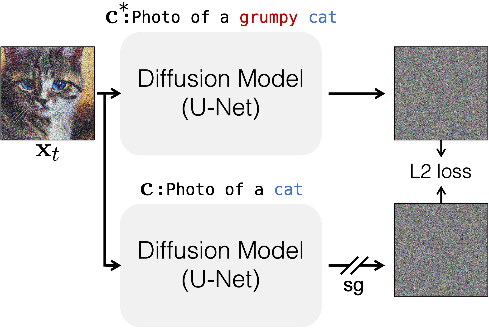
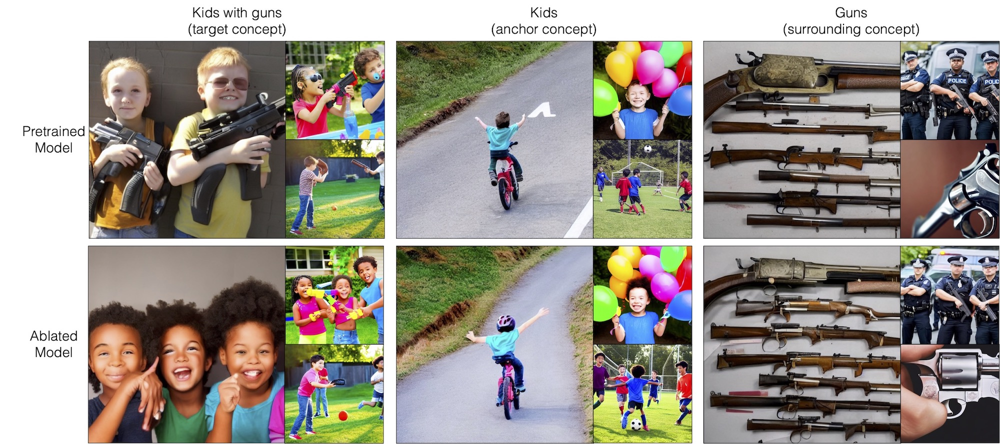
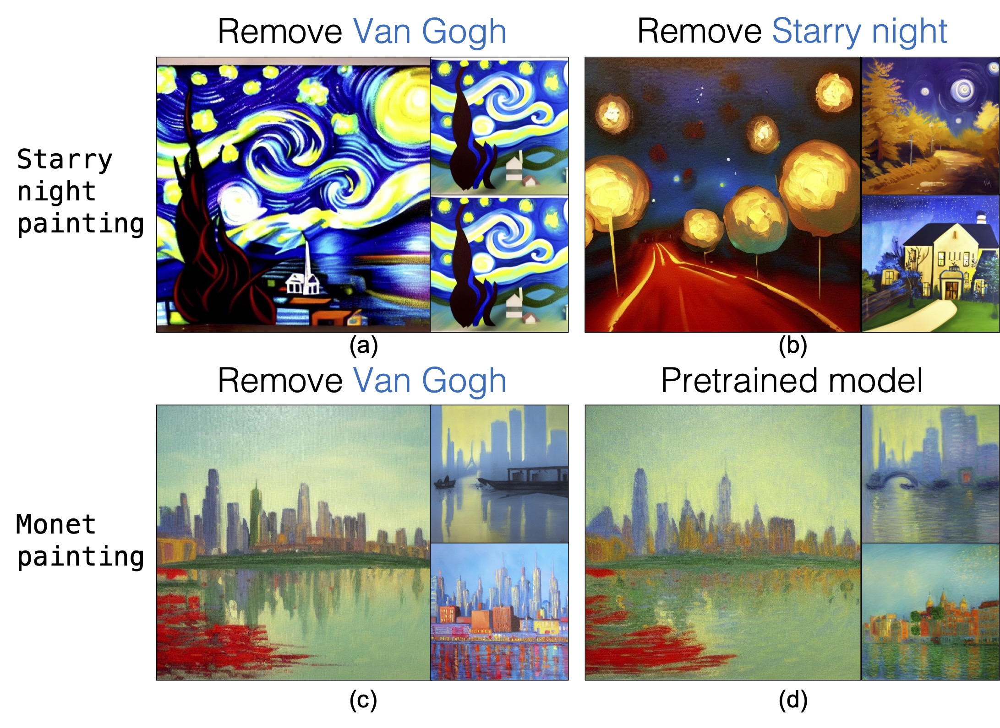

Large-scale text-to-image diffusion models can generate high-fidelity images with powerful compositional ability. However, these models are typically trained on an enormous amount of Internet data, often containing copyrighted material, licensed images, and personal photos. Furthermore, they have been found to replicate the style of various living artists or memorize exact training samples. How can we remove such copyrighted concepts or images without retraining the model from scratch? To achieve this goal, we propose an efficient method of ablating concepts in the pretrained model, i.e., preventing the generation of a target concept. Our algorithm learns to match the image distribution for a target style, instance, or text prompt we wish to ablate to the distribution corresponding to an anchor concept. This prevents the model from generating target concepts given its text condition. Extensive experiments show that our method can successfully prevent the generation of the ablated concept while preserving closely related concepts in the model.
Given a target concept Grumpy Cat to ablate and the anchor concept Cat, we fine-tune the model to have the same prediction given the target concept prompt A cute little Grumpy Cat as when the prompt is A cute little cat. The algorithm aims at minimizing the KL divergence between the target concept generated image distribution and anchor concept image distribution.

we show that our method can be used to ablate the composition of two concepts while still preserving the meaning of each concept, for example, ablating "kids with guns" but still generating each category individually.

Our method has still various limitations. It sometimes fails to ablate some famous paintings and can lead to degradation in some closely surrounding concepts.
In the below figure (a), our method fails to remove certain paintings generated with the painting's titles. We can further ablate these concepts as shown in (b). In figure(c), after we remove the target concept (e.g., Van Gogh), the results sometimes slightly degrade for surrounding concepts (Monet) compared to the pretrained model in figure (d).

@inproceedings{kumari2023conceptablation,
author = {Kumari, Nupur and Zhang, Bingliang and Wang, Sheng-Yu and Shechtman, Eli and Zhang, Richard and Zhu, Jun-Yan},
title = {Ablating Concepts in Text-to-Image Diffusion Models},
booktitle = International Conference on Computer Vision (ICCV),
year = {2023},
}
We are grateful to Gaurav Parmar, Daohan Lu, Muyang Li, Songwei Ge, Jingwan Lu, Sylvain Paris, and Bryan Russell for their helpful discussion, and to Aniruddha Mahapatra and Kangle Deng for paper proofreading. The work is partly supported by Adobe and NSF IIS-2239076. The website template is taken from Custom Diffusion project page.